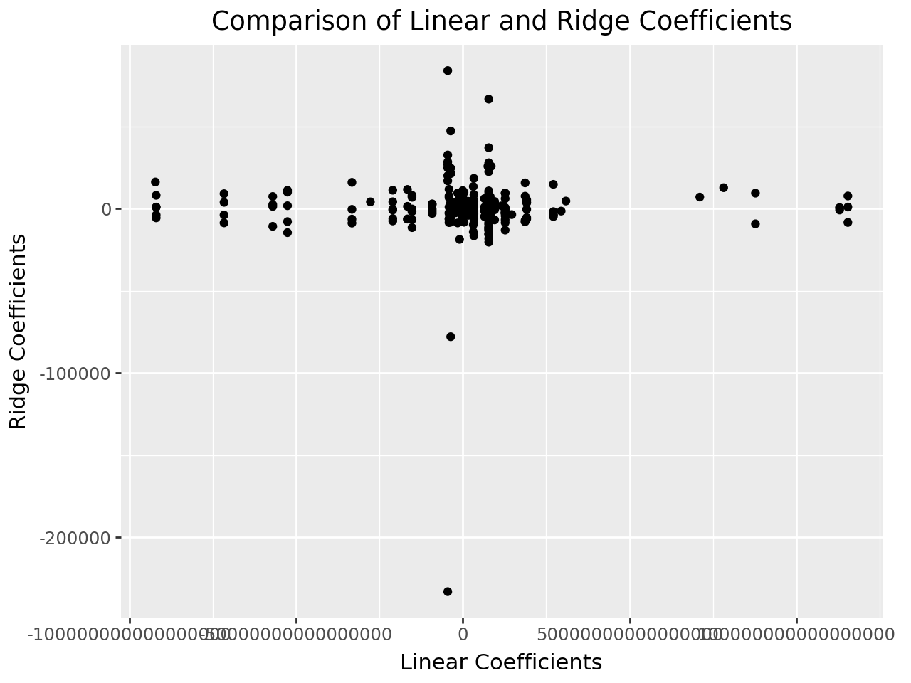

import pandas as pd
import numpy as np
from sklearn.pipeline import Pipeline
from sklearn.compose import make_column_selector, ColumnTransformer
from sklearn.preprocessing import StandardScaler, OneHotEncoder, PolynomialFeatures
from sklearn.linear_model import LinearRegression, Ridge, Lasso, ElasticNet
from sklearn.model_selection import train_test_split, cross_val_score
from sklearn.metrics import r2_score
from sklearn.model_selection import GridSearchCVMake a pipeline that uses all the variables in the Ames dataset, and then fits Ridge Regression with \(\lambda = 1\).
Cross-validate this pipeline and compare the results to the ordinary linear regression.
Then fit the model on the whole dataset and get the coefficients. Make a plot of these coefficients compared to the ones from ordinary linear regression.
# Read the data
ames = pd.read_csv("/content/AmesHousing.csv")
# Get rid of columns with mostly NaN values
good_cols = ames.isna().sum() < 100
ames = ames.loc[:,good_cols]
# Drop other NAs
ames = ames.dropna()# Set up pipeline
X = ames.drop(["SalePrice", "Order", "PID"], axis = 1)
y = ames["SalePrice"]
ct = ColumnTransformer(
[
("dummify",
OneHotEncoder(sparse_output = False, handle_unknown='ignore'),
make_column_selector(dtype_include=object)),
("standardize",
StandardScaler(),
make_column_selector(dtype_include=np.number))
],
remainder = "passthrough"
)
# Linear regression
lr = LinearRegression()
lr_pipeline = Pipeline(
[("preprocessing", ct),
("linear_regression", lr)]
)
# Cross validation
cross_val_score(lr_pipeline, X, y, cv = 5, scoring = 'r2')array([-2.59303720e+21, -1.13145211e+19, -7.57138616e+20, -4.47669752e+18,
-2.55949915e+20])# Ridge Regression
ridge_pipeline = Pipeline(
[("preprocessing", ct),
("ridge_regression", Ridge())]
)
# Cross-Validating
cross_val_score(ridge_pipeline, X, y, cv = 5, scoring = 'r2')array([0.89815807, 0.91744024, 0.79493606, 0.78522563, 0.91389818])# Plot of these coefficients compared to the ones from ordinary linear regression
import plotnine as p9
# Fitting both models on whole dataset
lr_fitted = lr_pipeline.fit(X, y)
ridge_fitted = ridge_pipeline.fit(X, y)
# Coefficients
lr_coefs = lr_fitted.named_steps['linear_regression'].coef_
ridge_coefs = ridge_fitted.named_steps['ridge_regression'].coef_
# Creating DataFrame for coefficients
df_coeff = pd.DataFrame({"linear": lr_coefs,
"ridge": ridge_coefs})
# Plotting with coefficients
(p9.ggplot(df_coeff, p9.aes(x="linear", y="ridge"))
+ p9.geom_point()
+ p9.labs(title="Comparison of Linear and Ridge Coefficients", x="Linear Coefficients", y="Ridge Coefficients"))
Using the same pipeline as previously, perform tuning on \(\lambda\).
You should always try \(\lambda\) values on a log scale; that is, don’t use [1,2,3,4]; instead use something like [0.001, 0.01, 0.1, 1, 10]
# Define the lambda values on a log scale
lambda_values = {'ridge_regression__alpha': [0.001, 0.01, 0.1, 1, 10, 100]}
# Set up GridSearchCV with the pipeline and parameter grid
gscv = GridSearchCV(ridge_pipeline, lambda_values, cv = 5, scoring = "r2")
# Fit the GridSearchCV to find the best lambda
gscv_fitted = gscv.fit(X, y)
# Converting Results to a Dataframe
results_df = pd.DataFrame(gscv_fitted.cv_results_)
# Mean test scores in descending order
ridge_results = pd.DataFrame({
"lambda": gscv_fitted.cv_results_['param_ridge_regression__alpha'],
"mean_test_score": gscv_fitted.cv_results_['mean_test_score']
}).sort_values(by="mean_test_score", ascending=False)
ridge_results| lambda | mean_test_score | |
|---|---|---|
| 4 | 10.000 | 0.864272 |
| 3 | 1.000 | 0.861932 |
| 5 | 100.000 | 0.857773 |
| 2 | 0.100 | 0.856302 |
| 1 | 0.010 | 0.854186 |
| 0 | 0.001 | 0.853920 |
Create a LASSO pipeline, and tune \(\lambda\).
Fit your best model on the full Ames data, and compare the coefficients to Ridge and OLS
# Lasso Pipeline
lasso_pipeline = Pipeline(
[("preprocessing", ct),
("lasso_regression", Lasso())]
)
# Tuning with different values of alpha (lambda)
lambda_values = {'lasso_regression__alpha': [0.001, 0.01, 0.1, 1, 10, 100]}
# Running GridSearchCV for Lasso
gscv_lasso = GridSearchCV(lasso_pipeline, lambda_values, cv=5, scoring='r2')
# Fitting GridSearchCV on all data
lasso_fitted = gscv_lasso.fit(X, y)
# Displaying Scores in Descending Order in DataFrame
lasso_results = pd.DataFrame({
"lambda": gscv_lasso.cv_results_['param_lasso_regression__alpha'],
"mean_test_score": gscv_lasso.cv_results_['mean_test_score']
}).sort_values(by="mean_test_score", ascending=False)
lasso_results/usr/local/lib/python3.10/dist-packages/sklearn/linear_model/_coordinate_descent.py:697: ConvergenceWarning: Objective did not converge. You might want to increase the number of iterations, check the scale of the features or consider increasing regularisation. Duality gap: 2.109e+11, tolerance: 1.348e+09
/usr/local/lib/python3.10/dist-packages/sklearn/linear_model/_coordinate_descent.py:697: ConvergenceWarning: Objective did not converge. You might want to increase the number of iterations, check the scale of the features or consider increasing regularisation. Duality gap: 2.466e+11, tolerance: 1.474e+09
/usr/local/lib/python3.10/dist-packages/sklearn/linear_model/_coordinate_descent.py:697: ConvergenceWarning: Objective did not converge. You might want to increase the number of iterations, check the scale of the features or consider increasing regularisation. Duality gap: 1.894e+11, tolerance: 1.463e+09
/usr/local/lib/python3.10/dist-packages/sklearn/linear_model/_coordinate_descent.py:697: ConvergenceWarning: Objective did not converge. You might want to increase the number of iterations, check the scale of the features or consider increasing regularisation. Duality gap: 1.756e+11, tolerance: 1.407e+09
/usr/local/lib/python3.10/dist-packages/sklearn/linear_model/_coordinate_descent.py:697: ConvergenceWarning: Objective did not converge. You might want to increase the number of iterations, check the scale of the features or consider increasing regularisation. Duality gap: 2.569e+11, tolerance: 1.477e+09
/usr/local/lib/python3.10/dist-packages/sklearn/linear_model/_coordinate_descent.py:697: ConvergenceWarning: Objective did not converge. You might want to increase the number of iterations, check the scale of the features or consider increasing regularisation. Duality gap: 2.110e+11, tolerance: 1.348e+09
/usr/local/lib/python3.10/dist-packages/sklearn/linear_model/_coordinate_descent.py:697: ConvergenceWarning: Objective did not converge. You might want to increase the number of iterations, check the scale of the features or consider increasing regularisation. Duality gap: 2.466e+11, tolerance: 1.474e+09
/usr/local/lib/python3.10/dist-packages/sklearn/linear_model/_coordinate_descent.py:697: ConvergenceWarning: Objective did not converge. You might want to increase the number of iterations, check the scale of the features or consider increasing regularisation. Duality gap: 1.988e+11, tolerance: 1.463e+09
/usr/local/lib/python3.10/dist-packages/sklearn/linear_model/_coordinate_descent.py:697: ConvergenceWarning: Objective did not converge. You might want to increase the number of iterations, check the scale of the features or consider increasing regularisation. Duality gap: 1.757e+11, tolerance: 1.407e+09
/usr/local/lib/python3.10/dist-packages/sklearn/linear_model/_coordinate_descent.py:697: ConvergenceWarning: Objective did not converge. You might want to increase the number of iterations, check the scale of the features or consider increasing regularisation. Duality gap: 2.456e+11, tolerance: 1.477e+09
/usr/local/lib/python3.10/dist-packages/sklearn/linear_model/_coordinate_descent.py:697: ConvergenceWarning: Objective did not converge. You might want to increase the number of iterations, check the scale of the features or consider increasing regularisation. Duality gap: 2.236e+11, tolerance: 1.348e+09
/usr/local/lib/python3.10/dist-packages/sklearn/linear_model/_coordinate_descent.py:697: ConvergenceWarning: Objective did not converge. You might want to increase the number of iterations, check the scale of the features or consider increasing regularisation. Duality gap: 1.570e+11, tolerance: 1.474e+09
/usr/local/lib/python3.10/dist-packages/sklearn/linear_model/_coordinate_descent.py:697: ConvergenceWarning: Objective did not converge. You might want to increase the number of iterations, check the scale of the features or consider increasing regularisation. Duality gap: 1.588e+11, tolerance: 1.463e+09
/usr/local/lib/python3.10/dist-packages/sklearn/linear_model/_coordinate_descent.py:697: ConvergenceWarning: Objective did not converge. You might want to increase the number of iterations, check the scale of the features or consider increasing regularisation. Duality gap: 1.698e+11, tolerance: 1.407e+09
/usr/local/lib/python3.10/dist-packages/sklearn/linear_model/_coordinate_descent.py:697: ConvergenceWarning: Objective did not converge. You might want to increase the number of iterations, check the scale of the features or consider increasing regularisation. Duality gap: 2.557e+11, tolerance: 1.477e+09
/usr/local/lib/python3.10/dist-packages/sklearn/linear_model/_coordinate_descent.py:697: ConvergenceWarning: Objective did not converge. You might want to increase the number of iterations, check the scale of the features or consider increasing regularisation. Duality gap: 2.323e+10, tolerance: 1.477e+09| lambda | mean_test_score | |
|---|---|---|
| 5 | 100.000 | 0.866931 |
| 4 | 10.000 | 0.860632 |
| 3 | 1.000 | 0.857152 |
| 2 | 0.100 | 0.856618 |
| 1 | 0.010 | 0.855606 |
| 0 | 0.001 | 0.855499 |
# Transform the data for consistency
X_transformed = ct.fit_transform(X)
# Best Lasso model
lasso_model = Lasso(alpha=100)
lasso_model.fit(X_transformed, y)
lasso_coefs = lasso_model.coef_
# Ridge model with previously selected best lambda
ridge_model = Ridge(alpha=gscv.best_params_['ridge_regression__alpha'])
ridge_model.fit(X_transformed, y)
ridge_coefs = ridge_model.coef_
# OLS model (no regularization)
ols_model = LinearRegression()
ols_model.fit(X_transformed, y)
ols_coefs = ols_model.coef_
# Create a DataFrame to compare coefficients
coeff_comparison = pd.DataFrame({
"Lasso": lasso_coefs,
"Ridge": ridge_coefs,
"OLS": ols_coefs
})
# Display the coefficient comparison
coeff_comparison| Lasso | Ridge | OLS | |
|---|---|---|---|
| 0 | -0.000000 | -4906.494598 | -2.241800e+13 |
| 1 | 0.000000 | 2346.943135 | -2.241800e+13 |
| 2 | -0.000000 | -1229.177404 | -2.241800e+13 |
| 3 | 0.000000 | 4620.911891 | -2.241800e+13 |
| 4 | 0.000000 | 2204.285000 | -2.241800e+13 |
| ... | ... | ... | ... |
| 249 | 2829.886060 | 3104.701760 | 2.720000e+03 |
| 250 | 791.915349 | 489.258612 | 2.816000e+03 |
| 251 | -4328.443776 | -4135.488058 | -5.152000e+03 |
| 252 | -576.052919 | -638.220273 | -8.160000e+02 |
| 253 | -767.372632 | -977.427542 | -5.860000e+02 |
254 rows × 3 columns
Create an Elastic Net pipeline, and tune \(\lambda\) and \(\alpha\).
Fit your best model on the full Ames data, and compare the coefficients to Ridge and OLS.
# Define the Elastic Net pipeline
elastic_pipeline = Pipeline([
("preprocessing", ct),
("elastic_net", ElasticNet())
])
# Define parameter grid for alpha (lambda) and l1_ratio
param_grid = {
'elastic_net__alpha': [0.001, 0.01, 0.1, 1, 10, 100],
'elastic_net__l1_ratio': [0.1, 0.5, 0.9]
}
# Set up GridSearchCV for Elastic Net
gscv_elastic_net = GridSearchCV(elastic_pipeline, param_grid, cv=5, scoring="r2")
# Fit GridSearchCV to find the best alpha and l1_ratio for Elastic Net
gscv_elastic_net.fit(X, y)
# Retrieve the best Elastic Net model and fit it on the full data
best_elastic_net_model = gscv_elastic_net.best_estimator_
best_elastic_net_model.fit(X, y)
elastic_net_coefs = best_elastic_net_model.named_steps['elastic_net'].coef_
# Fit Ridge and OLS models on the transformed data for comparison
ridge_model = Ridge(alpha=gscv.best_params_['ridge_regression__alpha'])
ridge_model.fit(X_transformed, y)
ridge_coefs = ridge_model.coef_
ols_model = LinearRegression()
ols_model.fit(X_transformed, y)
ols_coefs = ols_model.coef_
# Create a DataFrame to compare coefficients
coeff_comparison = pd.DataFrame({
"ElasticNet": elastic_net_coefs,
"Ridge": ridge_coefs,
"OLS": ols_coefs
}, index=ct.get_feature_names_out())
# Display the coefficient comparison
coeff_comparison/usr/local/lib/python3.10/dist-packages/sklearn/linear_model/_coordinate_descent.py:697: ConvergenceWarning: Objective did not converge. You might want to increase the number of iterations, check the scale of the features or consider increasing regularisation. Duality gap: 6.466e+11, tolerance: 1.348e+09
/usr/local/lib/python3.10/dist-packages/sklearn/linear_model/_coordinate_descent.py:697: ConvergenceWarning: Objective did not converge. You might want to increase the number of iterations, check the scale of the features or consider increasing regularisation. Duality gap: 7.259e+11, tolerance: 1.474e+09
/usr/local/lib/python3.10/dist-packages/sklearn/linear_model/_coordinate_descent.py:697: ConvergenceWarning: Objective did not converge. You might want to increase the number of iterations, check the scale of the features or consider increasing regularisation. Duality gap: 6.122e+11, tolerance: 1.463e+09
/usr/local/lib/python3.10/dist-packages/sklearn/linear_model/_coordinate_descent.py:697: ConvergenceWarning: Objective did not converge. You might want to increase the number of iterations, check the scale of the features or consider increasing regularisation. Duality gap: 5.353e+11, tolerance: 1.407e+09
/usr/local/lib/python3.10/dist-packages/sklearn/linear_model/_coordinate_descent.py:697: ConvergenceWarning: Objective did not converge. You might want to increase the number of iterations, check the scale of the features or consider increasing regularisation. Duality gap: 7.237e+11, tolerance: 1.477e+09
/usr/local/lib/python3.10/dist-packages/sklearn/linear_model/_coordinate_descent.py:697: ConvergenceWarning: Objective did not converge. You might want to increase the number of iterations, check the scale of the features or consider increasing regularisation. Duality gap: 6.191e+11, tolerance: 1.348e+09
/usr/local/lib/python3.10/dist-packages/sklearn/linear_model/_coordinate_descent.py:697: ConvergenceWarning: Objective did not converge. You might want to increase the number of iterations, check the scale of the features or consider increasing regularisation. Duality gap: 6.975e+11, tolerance: 1.474e+09
/usr/local/lib/python3.10/dist-packages/sklearn/linear_model/_coordinate_descent.py:697: ConvergenceWarning: Objective did not converge. You might want to increase the number of iterations, check the scale of the features or consider increasing regularisation. Duality gap: 6.005e+11, tolerance: 1.463e+09
/usr/local/lib/python3.10/dist-packages/sklearn/linear_model/_coordinate_descent.py:697: ConvergenceWarning: Objective did not converge. You might want to increase the number of iterations, check the scale of the features or consider increasing regularisation. Duality gap: 5.109e+11, tolerance: 1.407e+09
/usr/local/lib/python3.10/dist-packages/sklearn/linear_model/_coordinate_descent.py:697: ConvergenceWarning: Objective did not converge. You might want to increase the number of iterations, check the scale of the features or consider increasing regularisation. Duality gap: 6.963e+11, tolerance: 1.477e+09
/usr/local/lib/python3.10/dist-packages/sklearn/linear_model/_coordinate_descent.py:697: ConvergenceWarning: Objective did not converge. You might want to increase the number of iterations, check the scale of the features or consider increasing regularisation. Duality gap: 5.564e+11, tolerance: 1.348e+09
/usr/local/lib/python3.10/dist-packages/sklearn/linear_model/_coordinate_descent.py:697: ConvergenceWarning: Objective did not converge. You might want to increase the number of iterations, check the scale of the features or consider increasing regularisation. Duality gap: 6.319e+11, tolerance: 1.474e+09
/usr/local/lib/python3.10/dist-packages/sklearn/linear_model/_coordinate_descent.py:697: ConvergenceWarning: Objective did not converge. You might want to increase the number of iterations, check the scale of the features or consider increasing regularisation. Duality gap: 5.826e+11, tolerance: 1.463e+09
/usr/local/lib/python3.10/dist-packages/sklearn/linear_model/_coordinate_descent.py:697: ConvergenceWarning: Objective did not converge. You might want to increase the number of iterations, check the scale of the features or consider increasing regularisation. Duality gap: 4.505e+11, tolerance: 1.407e+09
/usr/local/lib/python3.10/dist-packages/sklearn/linear_model/_coordinate_descent.py:697: ConvergenceWarning: Objective did not converge. You might want to increase the number of iterations, check the scale of the features or consider increasing regularisation. Duality gap: 6.325e+11, tolerance: 1.477e+09
/usr/local/lib/python3.10/dist-packages/sklearn/linear_model/_coordinate_descent.py:697: ConvergenceWarning: Objective did not converge. You might want to increase the number of iterations, check the scale of the features or consider increasing regularisation. Duality gap: 2.429e+09, tolerance: 1.474e+09
/usr/local/lib/python3.10/dist-packages/sklearn/linear_model/_coordinate_descent.py:697: ConvergenceWarning: Objective did not converge. You might want to increase the number of iterations, check the scale of the features or consider increasing regularisation. Duality gap: 1.015e+10, tolerance: 1.463e+09
/usr/local/lib/python3.10/dist-packages/sklearn/linear_model/_coordinate_descent.py:697: ConvergenceWarning: Objective did not converge. You might want to increase the number of iterations, check the scale of the features or consider increasing regularisation. Duality gap: 3.603e+09, tolerance: 1.407e+09
/usr/local/lib/python3.10/dist-packages/sklearn/linear_model/_coordinate_descent.py:697: ConvergenceWarning: Objective did not converge. You might want to increase the number of iterations, check the scale of the features or consider increasing regularisation. Duality gap: 2.311e+09, tolerance: 1.477e+09
/usr/local/lib/python3.10/dist-packages/sklearn/linear_model/_coordinate_descent.py:697: ConvergenceWarning: Objective did not converge. You might want to increase the number of iterations, check the scale of the features or consider increasing regularisation. Duality gap: 6.470e+11, tolerance: 1.348e+09
/usr/local/lib/python3.10/dist-packages/sklearn/linear_model/_coordinate_descent.py:697: ConvergenceWarning: Objective did not converge. You might want to increase the number of iterations, check the scale of the features or consider increasing regularisation. Duality gap: 7.258e+11, tolerance: 1.474e+09
/usr/local/lib/python3.10/dist-packages/sklearn/linear_model/_coordinate_descent.py:697: ConvergenceWarning: Objective did not converge. You might want to increase the number of iterations, check the scale of the features or consider increasing regularisation. Duality gap: 6.103e+11, tolerance: 1.463e+09
/usr/local/lib/python3.10/dist-packages/sklearn/linear_model/_coordinate_descent.py:697: ConvergenceWarning: Objective did not converge. You might want to increase the number of iterations, check the scale of the features or consider increasing regularisation. Duality gap: 5.356e+11, tolerance: 1.407e+09
/usr/local/lib/python3.10/dist-packages/sklearn/linear_model/_coordinate_descent.py:697: ConvergenceWarning: Objective did not converge. You might want to increase the number of iterations, check the scale of the features or consider increasing regularisation. Duality gap: 7.233e+11, tolerance: 1.477e+09
/usr/local/lib/python3.10/dist-packages/sklearn/linear_model/_coordinate_descent.py:697: ConvergenceWarning: Objective did not converge. You might want to increase the number of iterations, check the scale of the features or consider increasing regularisation. Duality gap: 4.064e+09, tolerance: 1.793e+09
/usr/local/lib/python3.10/dist-packages/sklearn/linear_model/_coordinate_descent.py:697: ConvergenceWarning: Objective did not converge. You might want to increase the number of iterations, check the scale of the features or consider increasing regularisation. Duality gap: 4.064e+09, tolerance: 1.793e+09| ElasticNet | Ridge | OLS | |
|---|---|---|---|
| dummify__MS Zoning_C (all) | -4367.073164 | -4906.494598 | -2.241800e+13 |
| dummify__MS Zoning_FV | 2589.302226 | 2346.943135 | -2.241800e+13 |
| dummify__MS Zoning_I (all) | -919.417357 | -1229.177404 | -2.241800e+13 |
| dummify__MS Zoning_RH | 3853.919064 | 4620.911891 | -2.241800e+13 |
| dummify__MS Zoning_RL | 2216.939257 | 2204.285000 | -2.241800e+13 |
| ... | ... | ... | ... |
| standardize__Screen Porch | 3119.443565 | 3104.701760 | 2.720000e+03 |
| standardize__Pool Area | 410.933060 | 489.258612 | 2.816000e+03 |
| standardize__Misc Val | -4159.204931 | -4135.488058 | -5.152000e+03 |
| standardize__Mo Sold | -614.755896 | -638.220273 | -8.160000e+02 |
| standardize__Yr Sold | -979.307592 | -977.427542 | -5.860000e+02 |
254 rows × 3 columns